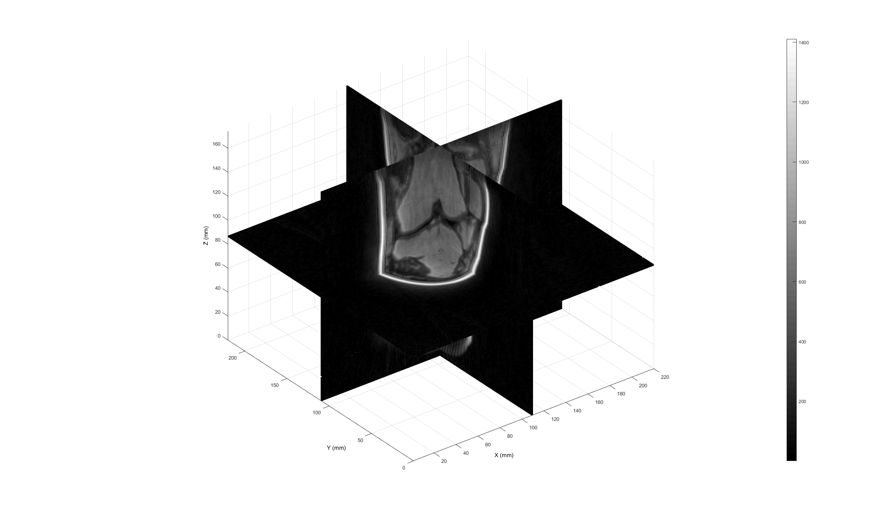
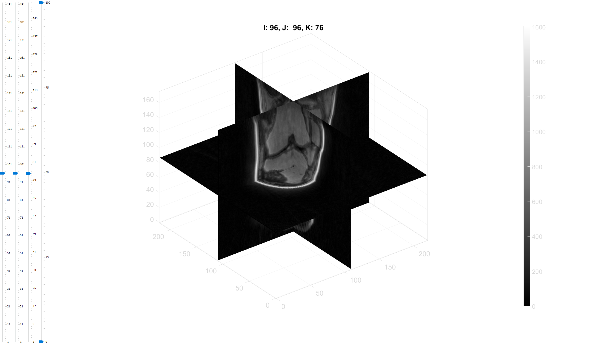

uiContourSegment
Below is a demonstration of the features of the uiContourSegment function
Contents
clear; close all; clc;
Loading example image data
Loading MRI data
toolboxPath=fileparts(mfilename('fullpath')); imageFolder=fullfile(toolboxPath,'data','DICOM','KNEE_UTE','IMDAT'); loadName=fullfile(imageFolder,'IMDAT.mat'); IMDAT_set=load(loadName); M=double(IMDAT_set.type_1); M_info=IMDAT_set.type_1_info(1); [v,OR,r,c]=dicom3Dpar(M_info);
Visualizing data
See ind2patch function for more information on visualization
logicVoxels=false(size(M)); logicVoxels(round(size(M,1)/2),:,:)=1; logicVoxels(:,round(size(M,2)/2),:)=1; logicVoxels(:,:,round(size(M,3)/2))=1; logicVoxels=logicVoxels & M>0; [F,V,C]=ind2patch(logicVoxels,M,'vb'); [V(:,1),V(:,2),V(:,3)]=im2cart(V(:,2),V(:,1),V(:,3),v); h1=cFigure; xlabel('X (mm)');ylabel('Y (mm)'); zlabel('Z (mm)'); hold on; hp1= patch('Faces',F,'Vertices',V,'FaceColor','flat','CData',C,'EdgeColor','none'); axis equal; view(3); axis tight; axis vis3d; grid on; colormap gray; colorbar; drawnow;
REMOVING BACKGROUND THROUGH THRESHOLDING/DILATION PROCEDURE
Removal of background may be useful see uiThreshErode L_BG=true(size(M)); %In this example background is not removed
thresholdInitial=0.1; %with respect to normalised image preBlurKernalSize=0; %with respect to normalised image groupCropOption=0; [L_BG]=uiThreshErode(M,thresholdInitial,preBlurKernalSize,groupCropOption);
SETTING CONTROL PARAMETERS
cPar.minContourSize=25; %Minimal size of detected contour cPar.smoothFactor=0.5; %Degree of smoothing csaps function (cubic smoothing spline) cPar.pointReductionFactor=1; %Reduction factor for contour smoothening cPar.logicBackGround=L_BG; %Ones (white) describe image data regions of interest i.e. a mask cPar.v=v; %Voxel size cPar.recoverOn=0; %Turn on or off file recovery mode cPar.sliceRange=98:104; %This can be a custom range. For unvisited slices the contour is empty saveName=[]; %If not empty this is where the contours are saved
hf=sliceViewer(M,v,2);
SEGMENTING CONTOURS
Run the following code: [Vcs]=uiContourSegment(M,cPar,saveName); Use the various options to try to segment the outer skin contour, press H to reveal the help window.
% [Vcs]=uiContourSegment(M,cPar,saveName);
Example contour process:

Clearly only features "detectable" with contour levels can be segmented or otherwise manual drawing is needed.

GIBBON www.gibboncode.org
Kevin Mattheus Moerman, gibbon.toolbox@gmail.com